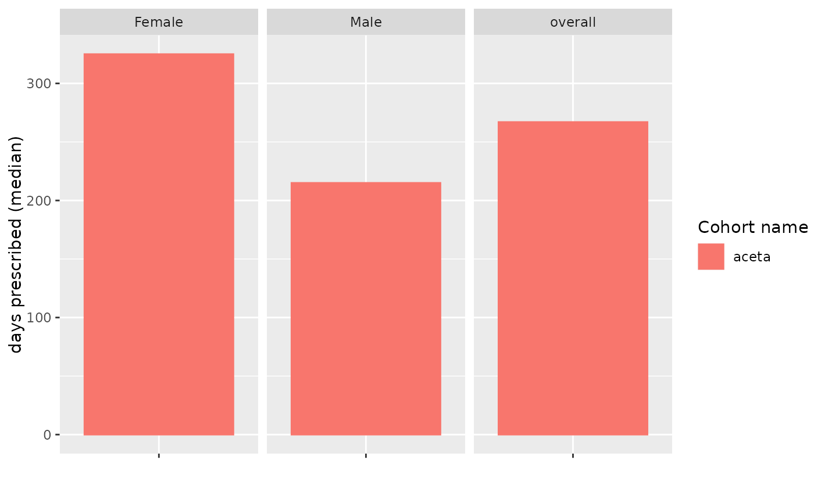
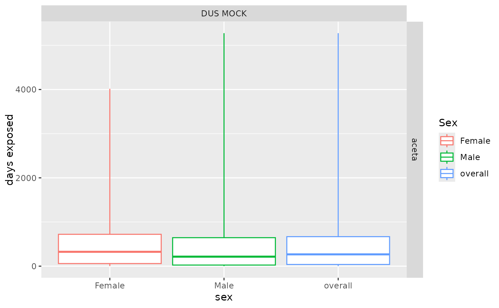
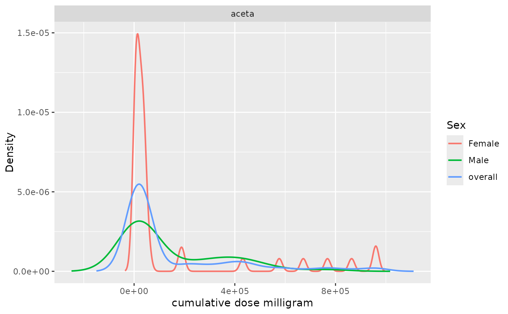

Plot the results of summariseDrugUtilisation
Usage
plotDrugUtilisation(
result,
variable = "number exposures",
plotType = "barplot",
facet = strataColumns(result),
colour = "cohort_name"
)Arguments
- result
A summarised_result object.
- variable
Variable to plot. See
unique(result$variable_name)for options.- plotType
Must be a choice between: 'scatterplot', 'barplot', 'densityplot', and 'boxplot'.
- facet
Columns to facet by. See options with
availablePlotColumns(result). Formula is also allowed to specify rows and columns.- colour
Columns to color by. See options with
availablePlotColumns(result).
Examples
# \donttest{
cdm <- mockDrugUtilisation(numberIndividuals = 100)
codes <- list(aceta = c(1125315, 1125360, 2905077, 43135274))
cdm <- generateDrugUtilisationCohortSet(
cdm = cdm,
name = "cohort",
conceptSet = codes
)
#> ℹ Subsetting drug_exposure table
#> ℹ Checking whether any record needs to be dropped.
#> ℹ Collapsing overlaping records.
#> ℹ Collapsing records with gapEra = 1 days.
result <- cdm$cohort |>
PatientProfiles::addSex() |>
summariseDrugUtilisation(
strata = "sex",
ingredientConceptId = 1125315,
estimates = c("min", "q25", "median", "q75", "max", "density")
)
result |>
dplyr::filter(estimate_name == "median") |>
plotDrugUtilisation(
variable = "days prescribed",
plotType = "barplot"
)

result |>
plotDrugUtilisation(
variable = "days exposed",
facet = cohort_name ~ cdm_name,
colour = "sex",
plotType = "boxplot"
)

result |>
plotDrugUtilisation(
variable = "cumulative dose milligram",
plotType = "densityplot",
facet = "cohort_name",
colour = "sex"
)

mockDisconnect(cdm)
# }